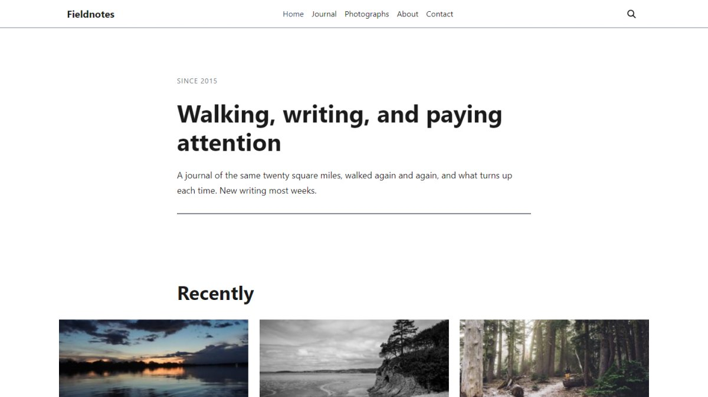

How to import
- Install and activate Kivora. No other plugin is required for the demo itself.
- Install One Click Demo Import — the free importer this demo is delivered through.
- Go to Appearance → Import Demo Data, find Fieldnotes, and click Import. Pages, posts, comments, menus, widgets, theme settings and every image arrive together.
Import onto a fresh site where possible. The importer adds content rather than replacing it, so on a site that already has pages you will end up with both.
Details
| Requires | Kivora 1.0.0+ |
|---|---|
| Version | 1.0 |
| Updated | 2026-08-19 |
| Category | Blog |
| Pages | 6 |
| Posts | 8 |
| Images | 10 |
| Plugins needed | None |
What the import creates
Images
All ten photographs are CC0 1.0 and safe to keep on your own site. Photographer credits are listed in CREDITS.md. Nobody is identifiable in any of them, and the author, the comments and the places are fictional.